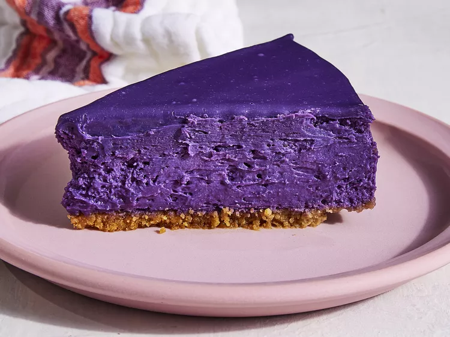

Ube Cheesecake

Description
This is the perfect sweet treat or dessert for a special occasion. The purple color gives it that wow-factor that will definitely turn heads.
Ingredients
- Cooking spray
- 1 cup graham cracker crumbs
- 3 tablespoons usalted butter
- 1 tablespoon granulated sugar
- 1/8 teaspoon kosher salt
- 3 (8 ounce) packages cream cheese
- 1/2 cup granulated sugar
- 1.25 cups ube jam
- 1/2 cup heavy whipping cream
- 3 large eggs
- 2.5 teaspoons ube extract
- 1/2 teaspoon vanilla extract
- 1/4 teaspoon kosher salt
- 1/2 cup white chocolate chips
Steps
- Preheat the oven to 325 degrees F (165 degrees C). Lightly spray a 9-inch springform pan with cooking spray. Wrap outside of the pan in a double layer of heavy-duty aluminum foil, making sure to reach all the way up the sides of the pan.
- Prepare the Crust: Stir together graham cracker crumbs, melted butter, granulated sugar, and salt in a bowl until thoroughly combined. Press mixture onto the bottom of the prepared springform pan.
- Bake in the preheated oven until set and lightly golden, about 15 minutes. Transfer to a wire rack and let cool for 20 minutes.
- Prepare the Filling: Beat cream cheese with a stand mixer fitted with a paddle attachment on medium speed until creamy and smooth, about 2 minutes. Add sugar and beat until combined, then add ube jam and cream, beating just until no streaks remain, stopping to scrape down the sides and bottom of the bowl as needed. Add eggs, 1 at a time, beating on low just until combined after each addition. Add ube extract, vanilla extract, and salt and beat on low until just combined. Pour filling into the cooled crust.
- Place springform pan in a large roasting pan. Add hot water to roasting pan to reach halfway up sides of springform pan.
- Return to the preheated oven and bake until the center is almost set but still slightly wobbly, 55 to 60 minutes. Turn off oven, and let cheesecake stand in oven, with door ajar (about 3 inches), for 1 hour.
- Remove cheesecake from roasting pan, and place on a wire rack. Remove foil from outside of the pan, and cool cheesecake to room temperature, about 1 hour. Cover with plastic wrap and transfer to the refrigerator to chill completely, at least 8 or up to 24 hours.
- Prepare Ganache: Place chocolate chips in a medium heat-proof bowl. Heat cream in a small saucepan over medium until steaming, then pour over the chocolate. Let stand for 1 minute, then whisk until chocolate is melted and smooth. Add ube extract and whisk to combine. Set aside to cool until thickened, about 15 minutes.
- Run a knife around outer edge of cheesecake to loosen from sides of pan. Remove sides of pan. Transfer cheesecake to a serving plate or platter. Pour ganache over the top of the cheesecake, letting it drip off the sides. Transfer to the refrigerator and chill until set, about 20 minutes.